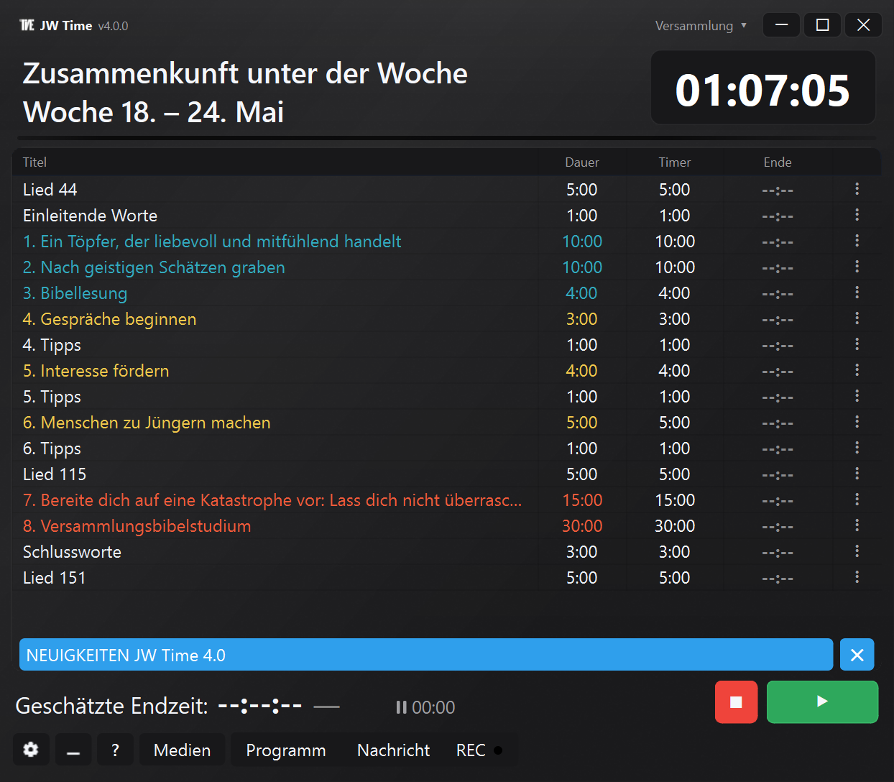
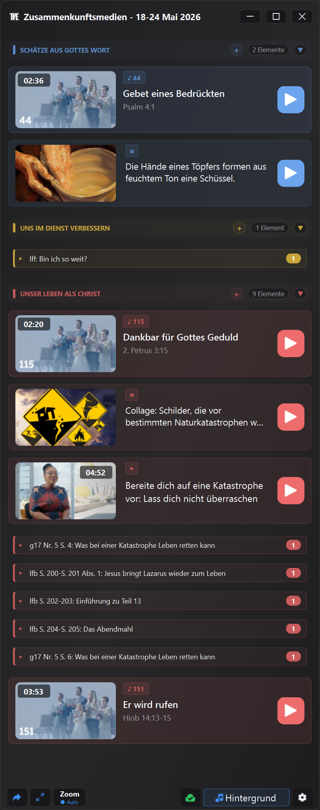

Entdecke die neuesten Funktionen und Verbesserungen in JW Time
Aktuelle im Store verfügbare Version: 4.0.7
Die 4.0-Serie verbessert weiterhin die Verwaltung des Programms, des Medienfensters,
der Versammlungsprofile, des Web-Monitors und der allgemeinen Stabilität der App.
Hier findest du die wichtigsten Neuerungen, die nach Version 4.0.0 hinzugekommen sind.
Aktualisierungen bis Version 4.0.7
Version 4.0.7 VERBESSERT
Die neue Spalte Ende kann die voraussichtliche Endzeit jedes Programmpunkts anzeigen.
Der Neuigkeiten-Banner erscheint nur, wenn die Online-Mitteilung eine neuere Version betrifft.
Profile, Backups, Fenster und Aufnahmegeräte werden zuverlässiger wiederhergestellt.
Mediengruppen verhalten sich beim Verschieben von Elementen in Gruppen, aus Gruppen heraus oder innerhalb von Gruppen vorhersehbarer.
Version 4.0.6 NEU
Im Medienfenster kannst du externe HTTPS-URLs außerhalb von jw.org und wol.jw.org zulassen, wenn die Option in den Einstellungen aktiviert ist.
Der Verbindungstest enthält umfangreichere Prüfungen für lokalen Server, integrierten Browser, externe URLs und Medienordner.
Die Zoom-Freigabe behandelt wartende Videos besser, wenn das Auswahlfenster geöffnet bleibt.
Du kannst ein Medienelement im Kontextmenü manuell als benutzt oder nicht benutzt markieren.
Version 4.0.5 VERBESSERT
Beim Wechsel der Versammlung respektieren Medienfenster und Öffentlicher Bildschirm den im Profil gespeicherten Zustand besser.
Die Vorschau von Bildern und PDFs geht besser mit nicht gespeicherten Änderungen um.
Beim Schließen des Medienfensters bietet JW Time klarere Optionen für den aktiven Öffentlichen Bildschirm.
Die Schaltfläche Zoom-Freigabe startet die Freigabe nur, wenn sie noch nicht aktiv ist.
Version 4.0.4 VERBESSERT
Wenn ein Programmpunkt die vorgesehene Zeit überschreitet, zeigt der Timer die Überschreitung mit + an, zum Beispiel +0:20.
Die Schaltfläche Weiter zeigt klarer an, wenn der nächste Klick in die automatische Pause wechselt.
Der Web-Monitor behält die gewählten Einstellungen besser bei und ist im Timer-Modus oder Vollbild aufgeräumter.
Beim Import einer einzelnen Versammlung werden auch Position und Größe des Timer-Fensters wiederhergestellt.
Version 4.0.3 VERBESSERT
Bilder und Videos können den aktiven Inhalt im Medienfenster direkt ersetzen, ohne vorher Stop zu drücken.
Der Web-Monitor behält die vom Nutzer gewählte Einstellung bei Updates, Migrationen und Profilspeicherungen besser bei.
Version 4.0.2 VERBESSERT
Verbesserter Import von JW Library-Playlists, einschließlich Medien ohne Dateiendung, aber mit angegebenem Dateityp.
Wenn es in der Playlist vorhanden ist, erkennt JW Time das Anfangslied des öffentlichen Vortrags besser.
Beschriftungen und Singular-/Pluralformen in medienbezogenen Fenstern folgen der App-Sprache besser.
Version 4.0.1 VERBESSERT
Verbesserter Abruf offizieller Wachtturm-Medien, wenn die Studienwoche an der Grenze zwischen zwei Ausgaben liegt.
Das Medienfenster akzeptiert auch das Ziehen von JW Library-Playlists und JW Time-Playlists.
Im Startassistenten wird beim Sprachwechsel der Jahrestext des Öffentlichen Bildschirms sofort in der tatsächlichen Sprache aktualisiert.
Version 4.0.0
Integrierte Medien, Öffentlicher Bildschirm, Versammlungsprofile, fernsteuerbarer Web-Monitor, flexiblere Aufzeichnung und umfassendere Werkzeuge für die Vorbereitung der Zusammenkunft.
Version 4.0.0 ergänzt JW Time um unterstützende Werkzeuge, mit denen verfügbare Inhalte vorbereitet und geprüft, auf dem Öffentlichen Bildschirm gezeigt und Timer, Medien sowie Aufzeichnung mit weniger manuellen Schritten verwaltet werden können.
Die für 3.0 vorgesehenen Funktionen sind in 4.0.0 eingeflossen, zusammen mit dem neuen Mediensystem, dem Öffentlichen Bildschirm und den Versammlungsprofilen. Deshalb springt die Historie direkt von 2.1.0 auf 4.0.0.
Unten findest du die wichtigsten Neuerungen mit konkreten Beispielen, was sich bei der praktischen Nutzung der App ändert.


Vorschau der neuen Oberfläche und des Medienfensters von JW Time 4.0.
Kurz gesagt NEU
Zeige und organisiere Bilder, Videos, PDFs, URLs, Lieder und bereits verfügbare offizielle Inhalte mit Unterstützung des Medienfensters.
Zeige Medien und visuelle Inhalte auf einem Öffentlichen Bildschirm, getrennt vom Timer-Bildschirm.
Passe den Timer-Bildschirm mit Presets, Editor, Hintergründen, Farben, Logo, Uhr und Ebenen an.
Nutze getrennte Versammlungsprofile für Bildschirme, Fenster, Server, Aufzeichnung, Medien und Layout.
Öffne den Web-Monitor per QR-Code und steuere Timer und Programm im Browser, wenn die Rolle autorisiert ist.
Bereite vollständigere Pakete und Backups vor, um offline zu arbeiten oder eine Konfiguration umzuziehen.
Medien und Vorbereitung NEU
Das Medienfenster bietet ein unterstützendes Werkzeug, um verfügbare Inhalte leichter vorzubereiten und zu prüfen.
Hinweis: Das Medienfenster ist eine technische Unterstützungsfunktion. Es hilft, verfügbare Inhalte leichter vorzubereiten und zu prüfen; die praktische Nutzung bleibt jedoch immer an lokale Bedürfnisse, die Hinweise der Versammlung und die geltenden Vorkehrungen gebunden.
Füge lokale Dateien, Bilder, Videos, PDFs und URLs hinzu.
Sieh Lieder, offizielle Medien und Inhalte, die mit der Woche verbunden sind.
Ordne manuelle Inhalte in Gruppen und bringe sie in die Reihenfolge des Programms.
Prüfe vorab, was vorhanden ist und was fehlt.
Öffne oder zeige Inhalte auf dem Öffentlichen Bildschirm, ohne in verschiedenen Ordnern zu suchen.
Offizielle Medien, Playlists und Pakete NEU
JW Time kann dabei helfen, bereits verfügbare offizielle Inhalte und lokale Inhalte geordneter zu organisieren und wiederzuverwenden, auch wenn offline gearbeitet werden muss.
Lade offizielle Medien herunter und nutze bereits lokal vorhandene Inhalte erneut.
Verwalte einen eigenen Cache für offizielle Lieder mit Verfügbarkeitsprüfung.
Importiere Playlists und verbinde bereits vorbereitetes Material.
Erstelle oder nutze Medienpakete mit lokalen Dateien, URLs, Bildern und offiziellen Inhalten.
Öffne den Media Checker, um fehlende Dateien, Offline-Inhalte, Probleme und lokale Größen zu sehen.
Kopiere Prüfdetails, wenn du ein Problem kontrollieren oder weitergeben musst.
Wichtiger Hinweis: Der in JW Time 2.1.0 eingeführte alternative Weg gilt für Wochen- und Wochenendprogramme. Für offizielle Medien gibt es keinen zweiten Wiederherstellungsserver. Wenn Router, Firewall, DNS oder Inhaltsfilter JW Time beim Zugriff auf jw.org oder religiöse Websites blockieren, kann das Medienfenster die offiziellen Medien möglicherweise nicht herunterladen. Bereits heruntergeladene Dateien, lokale Medien und manuell hinzugefügte Inhalte bleiben nutzbar.
Timer-Bildschirm und Öffentlicher Bildschirm NEU
Die Ansichten sind getrennt: Der Timer-Bildschirm ist für die Moderation, der Öffentliche Bildschirm für den Saal.
Starte mit fertigen Presets für den Timer-Bildschirm.
Bearbeite Layout, Ebenen, Farben, Hintergründe, Logo, Uhr und Texte im Editor.
Zeige Bilder, PDFs, Videos und visuelle Inhalte auf dem Öffentlichen Bildschirm.
Halte den Timer für den Vorsitzenden getrennt von dem Inhalt, den das Publikum sieht.
Fenster außerhalb des sichtbaren Bereichs und geänderte Monitor-Konfigurationen werden zuverlässiger wiederhergestellt.
Versammlungen, Profile und Backups NEU
Versammlungsprofile verhindern, dass JW Time in unterschiedlichen Situationen immer wieder neu eingerichtet werden muss.
Halte Sprache, Theme, Oberflächenskalierung, Bildschirme und Fenster getrennt.
Speichere verschiedene Konfigurationen für Web-Server, Aufzeichnung, Medien und Layout.
Importiere, exportiere und dupliziere Profile, um ähnliche Setups schneller vorzubereiten.
Übertrage Einstellungen mit vollständigeren Backups auf einen anderen Computer.
Vorhandene Einstellungen werden in das erste Profil migriert.
Web-Server und Fernsteuerung NEU
Der Web-Server kann nur zum Anzeigen des Programms genutzt werden oder, wenn autorisiert, zur Steuerung aus dem Browser.
Öffne den Web-Monitor vom Smartphone, Tablet oder einem anderen Computer im selben Netzwerk.
Nutze den QR-Code, um die Adresse des Web-Servers schneller zu erreichen.
Verfolge Timer, Programm und geschätzte Endzeit in Echtzeit.
Mit der Controller-Rolle kannst du starten, stoppen, zum nächsten Programmpunkt wechseln und verfügbare Werte in der Playlist ändern.
Schütze Editor, Controller und Fernzugriff bei Bedarf mit PIN.
Aufzeichnung und Audio VERBESSERT
Die Aufzeichnung ist besser an den realen Ablauf der Zusammenkunft angepasst, wo Pausen, Wiederaufnahme und schnelle Kontrollen nützlich sein können.
Pausiere und setze Aufzeichnungen direkter fort.
Kontrolliere konfigurierte Audiogeräte besser.
Sieh nützliche Informationen über REC-Schaltfläche und Audiopegel.
Verbinde Aufzeichnung, Medien und Timer, ohne unnötige Panels zu öffnen.
Einstellungen, Start-Assistent und Oberfläche VERBESSERT
Die Einstellungen wurden neu geordnet und der Start-Assistent hilft, die wesentlichen Bereiche einzurichten.
Konfiguriere Sprache, Bildschirme, Server, Backup und Hauptoptionen beim ersten Start.
Finde Theme, Oberflächenskalierung und Programmsprache leichter.
Nutze getrennte Einstellungsbereiche für Medien, Zoom, Web-Server, Aufzeichnungen und Backups.
Öffne das Fenster "Was ist neu" auch nach dem ersten Start direkt in der App.
Stabilität und Korrekturen KORRIGIERT
Viele Korrekturen betreffen praktische Situationen, die im wöchentlichen Gebrauch auftreten können.
Fensterpositionen werden besser gespeichert und nach Monitorwechseln zuverlässiger wiederhergestellt.
Saubereres Schließen der App, auch mit offenen Servern, Medien und Bildschirmen.
Stabilere Verwaltung von Öffentlichem Bildschirm, Web-Server, Medien und Aufzeichnung.
Verbesserte Downloads, Mediencache, lokale Pfade und temporäre Dateien.
Konsistentere App-Zustände beim Wechsel von Wochen, Sprachen, Versammlungen oder Programmen.
Version 2.1.0
LÖSUNG FÜR ALLE VERSAMMLUNGEN, DIE DIE PROGRAMME NICHT HERUNTERLADEN KONNTEN.
Programme bleiben erreichbar, mit neuen Download-Optionen.
⚠️ Probleme mit dem Web-Server?
ACHTUNG: Erstelle vor dem Fortfahren ein Backup der App, da du sie deinstallieren musst.
Einige Nutzer, die von früheren Versionen aktualisieren, können Probleme mit der Funktion Web-Server haben. Wenn der Web-Server nicht antwortet, gehe wie folgt vor, um die Firewall-Regeln zu bereinigen:
Lösung (nur einmal auszuführen):
Drücke Start und suche nach: "Windows Defender Firewall mit erweiterter Sicherheit". Öffne sie.
Klicke links auf Eingehende Regeln.
Suche in der Liste nach Einträgen, die JWTime enthalten.
Lösche sie alle (Rechtsklick auf die Regel → Löschen).
Nachdem du die Regeln gelöscht hast, installiere JWTime erneut und lade die Einstellungen neu. Teste dann den Web-Monitor.
Nach diesem Vorgang musst du ihn nicht erneut wiederholen.
Automatischer alternativer Download NEU
Zusätzlicher Weg zum Herunterladen der Wochenprogramme oder Wochenendprogramme, wenn Router oder Firewalls restriktiv sind.
Im Bereich Verbindungen kannst du den Programmdownload auch von einem bestimmten Server erzwingen.
Hinweis: Der zweite Server speichert nur 12 Wochen.
Ein Dank an Mauro für die wertvolle Unterstützung bei der Analyse von WOL-Verbindungsproblemen, die durch bestimmte Router-Konfigurationen verursacht wurden.
Verbesserter Web-Monitor NEU
Anzeige von Liedern und Senden von Nachrichten auf dem Bildschirm im Teilbild- oder Vollbildmodus.
Automatische Wiederverbindung bei Verbindungsabbruch und Bildschirmschoner zum Schutz des verbundenen Displays.
Pause/Fortsetzen für Aufzeichnung VERBESSERT
Du kannst die Aufzeichnung jetzt unterbrechen und später fortsetzen, wobei eine einzige Datei erhalten bleibt. Ideal, um bestimmte Momente wie Gebete auszuschließen oder unerwartete Unterbrechungen zu verwalten.
Bildschirm- und Fensterverwaltung VERBESSERT
Die Verwaltung von Vollbildfenstern (Timer-Bildschirm und Start der Zusammenkunft) wurde verbessert. Das System verhindert jetzt unbeabsichtigte Überlagerungen der Hauptoberfläche, auch wenn der externe Monitor plötzlich getrennt wird, sodass du immer die volle Kontrolle über die App behältst.
Verbesserte Diagnose VERBESSERT
Verbindungstests mit mehr nützlichen Daten und klareren Fehlermeldungen, wenn das Abrufen der Online-Programme fehlschlägt.
Verschiedene Verbesserungen und Fehlerbehebungen
Allgemeine Optimierungen, grafische Verbesserungen und kleinere Korrekturen für Stabilität und Klarheit.
Version 2.0.0
Eine komplett erneuerte Version mit erweiterten Funktionen für die Verwaltung von Zusammenkünften.
⚠️ Backup-Hinweis
Mit dieser Version werden viele neue Optionen hinzugefügt, die in alten Backups nicht vorhanden sind:
Das neue Speicherformat ist .jwtimesettings, aber du kannst weiterhin auch alte
Backup-Dateien im .json-Format laden. Nachdem du die neuen Einstellungen der Version 2.0 konfiguriert hast,
solltest du auch ein neues Backup im .jwtimesettings-Format erstellen, damit auch alle neuen Optionen
gespeichert werden.
Portugiesisch (Brasilien) hinzugefügt NEU
Portugiesisch (Brasilien) wurde hinzugefügt und kann im Einstellungsmenü ausgewählt werden.
Aufzeichnung der Zusammenkünfte NEU
Version 2.0 führt eine neue Funktion zur Audioaufzeichnung von Zusammenkünften ein.
Wo sie zu finden ist:
Einstellungsfenster: neuer Bereich "Aufzeichnungen"
Hauptfenster: neue Schaltfläche REC
Hauptfunktionen:
Auswahl des Zielordners
Aufzeichnungstest
Lautstärkeregelung für Mikrofon und PC-Audio
Automatische Ducking-Funktion
Speicher- und Dateistatistiken
Manuelle Steuerung mit der REC-Schaltfläche
Backup für OFFLINE-Modus NEU
Automatisches Backup der Wochenprogramme:
Bis zu 12 Wochen werden automatisch gespeichert
Programmabruf auch ohne Verbindung
Läuft im Hintergrund
Exportierte Backups für den OFFLINE-Einsatz:
Manueller Export von Programmpaketen
Auf andere PCs ohne Internet übertragbar
Ideal für Saal-PCs ohne Netzwerkverbindung
Mehrsprachige Verwaltung:
Separate Backups für jede Sprache (IT, EN, ES, DE, pt_BR)
Keine Überschneidung zwischen verschiedenen Sprachen
Verbindung, Web-Server und Log VERBESSERT
Erweiterter Verbindungstest:
Prüfung der Internetverbindung und der erforderlichen Websites
HTTPS- und Zertifikatsprüfung
Prüfung des System-Proxys
Prüfung der Zeitsynchronisierung
Schreibtest für Ordner (Log, Cache, Backup)
Verbesserte Logs:
Direktes Öffnen des Log-Ordners aus den Einstellungen
Klarere und nützlichere Meldungen
Web-Server-Seite:
Unterstützung für helles/dunkles Design
Manuelle Listen speichern NEU
Wenn du im Programmbereich die Schaltfläche "Manuell" drückst, stehen jetzt zwei neue Schaltflächen zur Verfügung:
"Manuelle Liste speichern" - Speichert deine eigene Liste
"Manuelle Liste laden" - Ruft eine gespeicherte Liste wieder auf
Vorteile:
Vollständig eigene Listen erstellen
Mit einem erkennbaren Namen speichern
Wieder aufrufen, ohne alles neu einzugeben
Die Schaltflächen verschwinden, wenn du zu Unter der Woche/Wochenende zurückkehrst
Neues helles Design VERBESSERT
Das neue helle Design wurde eingeführt und in Version 2.0 vollständig hinzugefügt.
Verbesserungen am hellen Design:
Besser lesbare Farben für Leben als Christ und Dienst
Deutlichere Zellenauswahl
Korrigierte Textfarben in Tabelle und aktiver Anzeige
Fehler im Lied-Popup des Redners behoben
Allgemeine Oberfläche:
Verbesserungen für mehr Klarheit
Einheitlicheres und stimmigeres Design
Version 1.8.4
Großes Update
Adaptives Wachtturm-Studium
Die App passt die Dauer des Wachtturm-Studiums automatisch an, damit die Zusammenkunft
besser zur vorgesehenen Schlusszeit endet. Diese Funktion wird in den Allgemeinen Einstellungen aktiviert.
Zeitabweichungsanzeige
Echtzeit-Anzeige, die zeigt, ob die Zusammenkunft:
Verspätet (Rot): Mehr als 1 Minute verspätet
Verspätet (Gelb): Bis zu 1 Minute verspätet
Voraus (Grün): Die Zusammenkunft verläuft schneller als erwartet
Pünktlich: Keine Farbe wird angezeigt
Die Anzeige wird während der Zusammenkunft automatisch in Echtzeit aktualisiert.
Technische Verbesserungen
Timer-Synchronisierung für höhere Genauigkeit optimiert
Stabilität des Timer-Bildschirms auf externen Monitoren verbessert
Kleinere grafische Korrekturen an der Oberfläche
Allgemeine Leistung optimiert
Version 1.8.0
Pausenfunktion
Pausenfunktion
Die Funktion Pause (ZZ) wurde eingeführt: Sie pausiert den aktuellen Timer
und zeigt die Anzeige ⏸. Die App verfolgt die gesamte "Pausenzeit/Sprecherwechselzeit".
Du kannst:
Fortsetzen: Weiterlaufen ab der Stelle, an der unterbrochen wurde
Zurücksetzen: Die angesammelte technische Zeit zurücksetzen
Adaptives Bibelstudium
Erste Version der adaptiven Funktion, angewendet auf das Bibelstudium der Versammlung.
Die App passt die Dauer automatisch an, um die vorgesehene Schlusszeit einzuhalten.
Fehlerbehebungen
Synchronisierungsprobleme zwischen Hauptbildschirm und externem Monitor behoben
Allgemeine Stabilität der Anwendung verbessert
Version 1.1.6
Kompatibilitätsupdate
Programm-Update
Probleme mit der Timer-Tabelle wurden entsprechend den Änderungen
auf der offiziellen Website jw.org behoben.
Synchronisierung mit dem neuen Programmformat aktualisiert
Kompatibilität mit den letzten Änderungen an den Zusammenkunftsprogrammen